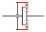
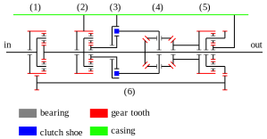

Engines have specific favorable rotational speed.
Transmissions convert the rotational speed of engine to the objective output rotational speed.
Continuously variable transmission (CVT) can change its gear ratio continuously,
contributing to keep the favorable rotational speed of engine and to reduce shock on gear change.
Mainstreams of CVT are friction based one and planetary gear based one.
Planetary gear based CVT basically requires electric motor.
Also CVT requires automatic controller like a conputer to set optimal gear ratio.
Of course the electric motor and the conputer require some cost and battery, and have some weight.
In this article, I propose a mechanical, passive and planetary gear based CVT for more cheaper use.
Basics of planetary gear mechanism
Planetary gear mechanism consists of a sun gear, a outer gear, a planetary carrier and planetary gears.
The sun gear, the outer gear and the planetary carrier has a same rotational axis.
The skeleton diagram of a planetary gear mechanism can be like Fig1.

Skeleton diagram of a planetary gear mechanism
The rotational speed of a sun gear, a outer gear, a planetary carrier and planetary gears are represented as
\(\omega_{s}\), \(\omega_{o}\), \(\omega_{c}\) and \(\omega_{p}\) in this article.
The number of tooth of a sun gear, a outer gear, a planetary carrier and planetary gears are represented as
\(z_{s}\), \(z_{o}\) and \(z_{p}\) in this article.
The relation among the rotational speed and the number of tooth in a planetary gear mechanism is represented as below.
\[
\omega_{p} = \omega_{c} - (\omega_{s} - \omega_{c})\frac{z_{s}}{z_{p}} \\
\omega_{o} = \omega_{c} - (\omega_{s} - \omega_{c})\frac{z_{s}}{z_{o}}
\]
Basic idea
When the favorable rotational speed of engine and the output rotational speed are given as \(\omega_{opt}\) and \(\omega_{out}\),
the required gear ratio \(g_{r}\) can be represented as below.
\[
\omega_{out} = \omega_{opt}g_{r}
\]
On the other hand,
gear ratio with a planetary gear mechanism
using the planetary carrier as a input and the sun gear as a output
can be represented as below.
\[
\omega_{s1} = \omega_{c1}g_{r} \\
g_{r} = \frac{\omega_{s1}}{\omega_{c1}}
= \frac{\omega_{s1}(1+k_{1})}{\omega_{o1}+k_{1}\omega_{s1}} \\
k_{1} = \frac{z_{s1}}{z_{o1}} \\
\]
Then outer gear as a control input need to match the equation below.
\[
\omega_{o1} = \omega_{opt}(1+k_{1})-k_{1}\omega_{s1}
= k_{1}\left(2\left(\omega_{opt}\frac{1+k_{1}}{2k_{1}}\right)-\omega_{s1}\right)\\
\]
When this \(\omega_{o1}\) feedback can be made from \(\omega_{s1}\),
passive continuous variable transmission can be done.
Implementation
Breaking Down to Parts
With \(\omega_{const}\), \(f_{d}\) and \(f_{k}\) which are represented as below,
\(\omega_{o1}\) can be represented as below.
\[
\omega_{const} = \omega_{opt}\frac{1+k_{1}}{2k_{1}} \\
f_{d}(\omega_{1}, \omega_{2}) = 2\omega_{1}-\omega_{2} \\
f_{k}(\omega) = k_{1}\omega
\]
\[
\omega_{o1} = f_{k}(f_{d}(\omega_{const}, \omega_{s1}))
\]
\(f_{k}\) can be implemented as a planetary gear mechanism, or something other speed increaser.
\(f_{d}\) can be implemented as a differential gear.
\(\omega_{const}\) seems to be little tricky.
Building \(\omega_{const}\)
\(\omega_{const}\) can be implemented as a combination of drum brake and normally closed centrifugal clutch.
Normally closed centrifugal clutch uses centrifugal force on weighted arm to disengage the friction face, and springs to engage.
The clutch is engaged in low rotational speed and will be disengaged at certain rotational speed \(\omega_{low}\).
In other words, normally closed centrifugal clutch can accelerate the output if it is too low.
And then if the rotational speed is higher than \(\omega_{high}\), centrifugal force engages the weighted arms to drum brake.
In other words, drum brake can supress the output if it is too high.
So now we can make \(\omega_{low} \le \omega_{const} \le \omega_{high}\).
By the way, clutch needs a input to accelerate the output.
In this article, we use \(C_{c}\omega_{s1}\) as input where \(C_{c}\) is constant.
Then if the output is lower than \(\omega_{low}\), it will be equal to \(C_{c}\omega_{s1}\).
In this case, this transmission provides minimum gear ratio \(g_{rmin}\) as below.
\[
g_{rmin} = \frac{1+k_{1}}{2k_{1}C_{c}}
\]
Overview
The skeleton diagram of a proposed transmission can be like Fig2.

Skeleton diagram of proposed passive CVT
(1) shows core planetary gear mechanism.
(2) shows speed increaser for input of the clutch \(C_{c}\omega_{s1}\).
(3) shows drum brake and nomally closed centrifugal clutch for \(\omega_{const}\).
(4) shows differential gear \(f_{d}\).
(5) shows speed increaser \(f_{k}\).
(6) shows feedback.
Simulation
This transmission is simulated on blender.
In this simulation, centrifugal clutch and its input are omitted because its output is accelerated from the other side.
Same color things have same rotational speed.
Red shows \(\omega_{c1}\), blue shows \(\omega_{s1}\), yellow shows \(\omega_{o1}\) and pink shows \(\omega_{const}\).
Input torque is applied to make \(\omega_{c1}\) faster.
You can see that the \(\omega_{c1}\) is limited to constant rotational speed despite the input torque
and the \(\omega_{s1}\) gradually get higher,
which means the gear ratio continuously changes according to its output to keep \(\omega_{c1}\) constant.